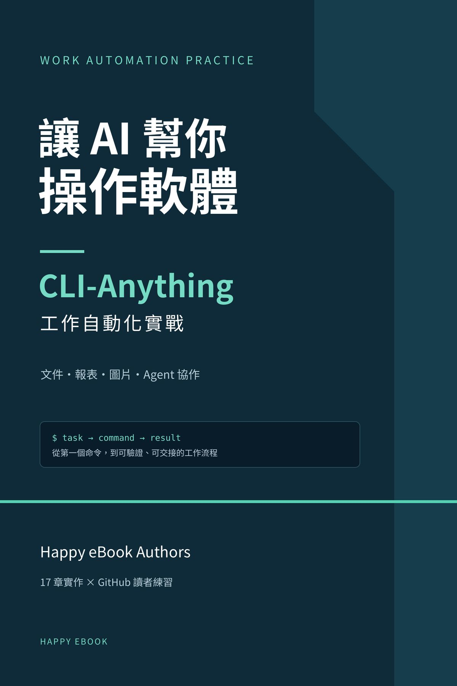

電子書
讓 AI 幫你操作軟體
讓 AI 不只回答問題，也能透過命令列實際操作軟體

讓 AI 幫你操作軟體
讓 AI 不只回答問題，也能透過命令列實際操作軟體
讓 AI 不只回答問題，也能透過命令列實際操作軟體。本書從 CLI-Hub 與環境準備開始，帶你以文件、報表、圖片和出版流程練習 AI Agent 自動化，再逐步建立命令列介面、測試、錯誤處理與交接方法。第十四章以 CLI-Anything 為既有 Python 專案生成 CLI，並示範如何用實際測試驗收結果。 全書 17 章，附 GitHub 讀者練習專案與固定版本範例，適合想把重複操作整理成可重跑、可檢查工作流程的讀者。案例使用 Claude Code、Codex、Python 與開源軟體；各工具功能會隨版本變動，書中標示相應版本與驗證範圍。本書為獨立教材，並非 CLI-Anything 官方出版品